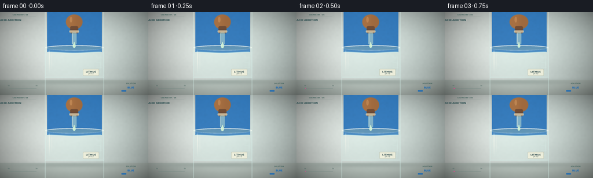
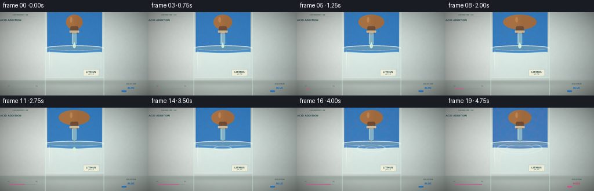
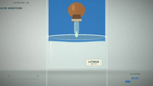
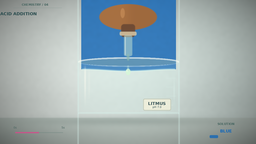
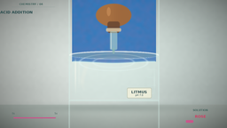
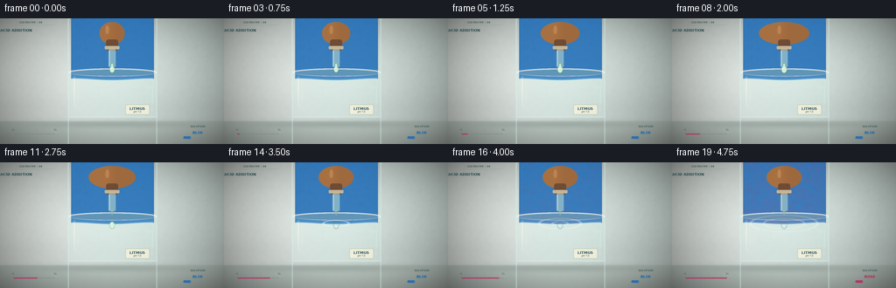
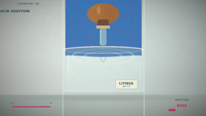
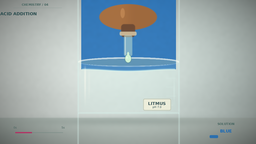

CODING AGENTS AS PIXEL WORLD MODELS
traex/DeepSeek-V4.1-Flash · material_0037
点击播放 · 原生 RGB 像素
逐轮保存的候选
回放视频、检查图与代码变化。
每份候选均可单独播放。实际图片检查记录在下方工具轨迹中。
候选 01播放与检查图
点击播放 · 原生 RGB 像素


展开代码变化
--- 上一保存版本
+++ 本次保存版本
@@ -0,0 +1,362 @@
+from pathlib import Path
+
+import numpy as np
+from PIL import Image, ImageDraw, ImageFilter, ImageFont
+
+import artifact_io
+
+
+ROOT = Path(__file__).resolve().parent
+W, H, N, FPS = 256, 144, 20, 4
+S = 4 # Supersampled working resolution.
+IW, IH = W * S, H * S
+
+yy, xx = np.mgrid[0:IH, 0:IW].astype(np.float32)
+u = xx / S
+v = yy / S
+
+
+def smoothstep(edge0, edge1, x):
+ t = np.clip((x - edge0) / (edge1 - edge0), 0.0, 1.0)
+ return t * t * (3.0 - 2.0 * t)
+
+
+def mix(a, b, t):
+ if np.ndim(a) == 0 and np.ndim(b) == 0:
+ return a * (1.0 - t) + b * t
+ if isinstance(t, np.ndarray):
+ if t.ndim == 2:
+ t = t[..., None]
+ elif a.ndim == 3:
+ t = np.float32(t)[..., None]
+ return a * (1.0 - t) + b * t
+
+
+def soft_mask(distance, feather):
+ return smoothstep(feather, -feather, distance)
+
+
+def rgb(hex_color):
+ hex_color = hex_color.lstrip("#")
+ return np.array([int(hex_color[i:i + 2], 16) for i in (0, 2, 4)], np.float32)
+
+
+def rounded_rect_mask(x0, y0, x1, y1, radius, feather=0.8):
+ cx = np.clip(u, x0 + radius, x1 - radius)
+ cy = np.clip(v, y0 + radius, y1 - radius)
+ d = np.sqrt((u - cx) ** 2 + (v - cy) ** 2)
+ return soft_mask(d - radius, feather)
+
+
+def capsule_mask(x0, y0, x1, y1, width, feather=0.65):
+ dx, dy = x1 - x0, y1 - y0
+ length2 = max(dx * dx + dy * dy, 1e-5)
+ t = np.clip(((u - x0) * dx + (v - y0) * dy) / length2, 0.0, 1.0)
+ px, py = x0 + dx * t, y0 + dy * t
+ d = np.sqrt((u - px) ** 2 + (v - py) ** 2)
+ return soft_mask(d - width * 0.5, feather)
+
+
+def ellipse_mask(cx, cy, rx, ry, feather=0.7):
+ d = np.sqrt(((u - cx) / rx) ** 2 + ((v - cy) / ry) ** 2)
+ return smoothstep(1.0 + feather / max(rx, ry), 1.0 - feather / max(rx, ry), d)
+
+
+def gaussian_blur(image, radius):
+ return np.asarray(
+ Image.fromarray(np.clip(image, 0, 255).astype(np.uint8)).filter(
+ ImageFilter.GaussianBlur(radius * S)
+ ),
+ dtype=np.float32,
+ )
+
+
+def texture(seed, blur=0.0):
+ rng = np.random.default_rng(seed)
+ small = rng.normal(0.0, 1.0, (IH // 12, IW // 12)).astype(np.float32)
+ noise = np.asarray(
+ Image.fromarray(((small - small.min()) / (np.ptp(small) + 1e-6) * 255).astype(np.uint8))
+ .resize((IW, IH), Image.Resampling.BICUBIC)
+ .filter(ImageFilter.GaussianBlur(max(blur, 0.01) * S)),
+ dtype=np.float32,
+ )
+ return (noise - 128.0) / 128.0
+
+
+BG_NOISE = texture(11, 0.8)
+WATER_NOISE = texture(23, 0.35)
+PLUME_NOISE = texture(37, 1.2)
+VIGNETTE = np.clip(
+ 1.0 - 0.42 * (((u - 128.0) / 153.0) ** 2 + ((v - 70.0) / 100.0) ** 2),
+ 0.42,
+ 1.0,
+)
+
+# Colors sampled from a restrained laboratory palette.
+INK = rgb("#17252b")
+SLATE = rgb("#40565c")
+MINT = rgb("#b7e4d1")
+GLASS = rgb("#d8f4ee")
+WHITE = rgb("#fffdf1")
+CORK = rgb("#b77942")
+ACID = rgb("#d6f7d8")
+BLUE = rgb("#1768b6")
+BLUE_DARK = rgb("#0d3f79")
+MAGENTA = rgb("#d74b8b")
+ROSE = rgb("#f1a2ad")
+RED = rgb("#cf3f63")
+
+
+def add_layer(canvas, color, alpha):
+ alpha = np.clip(alpha, 0.0, 1.0)[..., None]
+ canvas[:] = canvas * (1.0 - alpha) + color * alpha
+
+
+def background():
+ horizontal = smoothstep(0, 256, u)
+ vertical = smoothstep(0, 144, v)
+ base = (
+ rgb("#e9f0eb") * (1.0 - horizontal)[..., None]
+ + rgb("#d9e7e2") * horizontal[..., None]
+ )
+ base *= (1.0 - 0.045 * vertical)[..., None]
+ base += 3.5 * BG_NOISE[..., None]
+
+ # Broad tabletop and its soft contact shadow.
+ table = smoothstep(117.0, 118.3, v)
+ base = mix(base, rgb("#c7d3cc") + 2.0 * BG_NOISE[..., None], table)
+ table_glow = np.exp(-((v - 118.0) / 13.0) ** 2) * 0.05
+ base = base * (1.0 + table_glow[..., None])
+ shadow = np.exp(-(((u - 128.0) / 86.0) ** 2 + ((v - 121.0) / 4.6) ** 2))
+ add_layer(base, rgb("#4f615d"), 0.23 * shadow)
+
+ # A cool wall reflection gives the glass edges something to catch.
+ wall_band = np.exp(-((u - 75.0) / 33.0) ** 2) * smoothstep(35, 76, v) * (1 - table)
+ add_layer(base, rgb("#f8fffb"), 0.18 * wall_band)
+ base *= VIGNETTE[..., None]
+ return base
+
+
+BASE_BG = background()
+
+
+def draw_label(canvas, cx, cy, text, color, alpha=1.0, scale=1.0, bold=False):
+ image = Image.fromarray(np.clip(canvas, 0, 255).astype(np.uint8))
+ draw = ImageDraw.Draw(image)
+ font_path = "/usr/share/fonts/truetype/dejavu/DejaVuSans-Bold.ttf" if bold else "/usr/share/fonts/truetype/dejavu/DejaVuSans.ttf"
+ font = ImageFont.truetype(font_path, int(6.0 * S * scale))
+ box = draw.textbbox((0, 0), text, font=font)
+ tw, th = box[2] - box[0], box[3] - box[1]
+ draw.text(
+ (cx * S - tw / 2, cy * S - th / 2 - box[1]),
+ text,
+ fill=tuple(color.astype(int)) + (int(255 * alpha),),
+ font=font,
+ )
+ return np.asarray(image, dtype=np.float32)
+
+
+def draw_beaker(canvas, t):
+ left, right = 78.0, 179.0
+ top, bottom = 59.0, 113.0
+ rim_y = 62.0
+ liquid_top = 70.0
+
+ # Back glass tint and the beaker's floor.
+ body = rounded_rect_mask(left, top, right, bottom, 3.0, 0.55)
+ inner = rounded_rect_mask(left + 3.0, top + 3.0, right - 3.0, bottom - 3.0, 2.0, 0.7)
+ add_layer(canvas, rgb("#e5f7f0"), 0.09 * body)
+ add_layer(canvas, rgb("#c1e6dd"), 0.07 * inner)
+
+ # Liquid volume, with a slightly bowed meniscus.
+ surface = liquid_top + 0.9 * np.cos(np.clip((u - 128.0) / 45.0, -1.0, 1.0) * np.pi)
+ liquid = soft_mask((v - surface) * 0.78, 0.25) * soft_mask(v - (bottom - 4.0), 0.55)
+ liquid *= (u > left + 3.2) & (u < right - 3.2)
+
+ # Acid plume: a narrow pink thread, then two curling lobes.
+ p = np.clip((t - 3.35) / 5.0, 0.0, 1.0)
+ plume_center = 91.0 + 13.0 * p
+ sway = 2.0 * np.sin(p * 4.0 + (v - liquid_top) * 0.16)
+ plume_x = plume_center + sway
+ width = mix(1.7, 8.5, smoothstep(0.0, 0.85, p))
+ thread = np.exp(-((u - plume_x) / width) ** 2) * smoothstep(70.2, 73.0, v)
+ thread *= smoothstep(109.0, 91.0, v)
+ thread *= smoothstep(0.0, 0.18, p)
+ lobe_phase = smoothstep(0.22, 1.0, p)
+ lobe1 = np.exp(
+ -(
+ ((u - (plume_center - 7.0 - 4.0 * lobe_phase)) / (3.2 + 5.0 * lobe_phase)) ** 2
+ + ((v - (91.0 + 8.0 * lobe_phase)) / (4.0 + 9.0 * lobe_phase)) ** 2
+ )
+ )
+ lobe2 = np.exp(
+ -(
+ ((u - (plume_center + 7.0 + 4.5 * lobe_phase)) / (3.5 + 5.8 * lobe_phase)) ** 2
+ + ((v - (94.0 + 7.0 * lobe_phase)) / (4.5 + 8.0 * lobe_phase)) ** 2
+ )
+ )
+ plume = np.clip(thread * (0.62 + 0.22 * PLUME_NOISE) + 0.72 * (lobe1 + lobe2) * lobe_phase, 0, 1)
+ plume *= liquid
+
+ # The blue begins losing ground at the plume edges and turns rose at the end.
+ mix_front = np.clip(
+ smoothstep(2.7, 13.0, t) * 0.78
+ + 0.30 * np.exp(-(((u - 128.0) / (32.0 + 5.0 * t)) ** 2 + ((v - 94.0) / 24.0) ** 2))
+ + 0.18 * PLUME_NOISE,
+ 0.0,
+ 1.0,
+ )
+ mix_front *= smoothstep(3.15, 4.35, t)
+ mix_front = np.clip(mix_front + 0.86 * smoothstep(5.8, 8.2, t), 0.0, 1.0)
+ fluid_base = mix(BLUE, MAGENTA, 0.86 * mix_front)
+ fluid_base = fluid_base + (ROSE - fluid_base) * (0.28 * smoothstep(6.0, 8.0, t))
+
+ # Internal caustics and a darker bottom give the volume depth.
+ caustic = (
+ 0.10 * np.exp(-(((u - 106.0) / 20.0) ** 2 + ((v - 86.0) / 5.0) ** 2))
+ + 0.07 * np.exp(-(((u - 151.0) / 9.0) ** 2 + ((v - 99.0) / 16.0) ** 2))
+ + 0.035 * WATER_NOISE
+ )
+ fluid_base = fluid_base * (1.0 + caustic[..., None])
+ depth = smoothstep(72.0, 109.0, v)
+ fluid_base *= (1.0 - 0.28 * depth)[..., None]
+ add_layer(canvas, fluid_base, 0.83 * liquid)
+
+ # Acid plume color is deliberately brighter than the surrounding solution.
+ add_layer(canvas, rgb("#ffc1ba"), 0.56 * plume)
+ add_layer(canvas, rgb("#fff0dd"), 0.24 * np.clip(thread - 0.35, 0, 1))
+
+ # Surface highlights, meniscus and moving concentric ripples after impact.
+ meniscus = np.exp(-((v - surface) / 0.85) ** 2) * (u > left + 4) * (u < right - 4)
+ add_layer(canvas, rgb("#d6fbf4"), 0.48 * meniscus)
+ impact_t = t - 3.0
+ if impact_t > 0:
+ ripple = np.zeros_like(canvas[..., 0])
+ for delay, strength in ((0.0, 0.65), (0.8, 0.42), (1.8, 0.27)):
+ age = impact_t - delay
+ if age > 0:
+ radius = 5.0 + age * 19.0
+ d = np.abs(np.sqrt((u - 128.0) ** 2 + ((v - liquid_top) * 4.0) ** 2) - radius)
+ ring = np.exp(-(d / 1.4) ** 2)
+ ripple += strength * ring * np.exp(-age / 3.0)
+ add_layer(canvas, rgb("#edffff"), np.clip(ripple, 0, 0.5))
+
+ # Front and side glass walls.
+ wall_alpha = 0.13 * body
+ edge = np.exp(-((u - left) / 0.72) ** 2) + np.exp(-((u - right) / 0.72) ** 2)
+ edge += np.exp(-((v - bottom) / 0.8) ** 2) * (u > left) * (u < right)
+ add_layer(canvas, GLASS, np.clip(wall_alpha + 0.42 * edge, 0, 1))
+ highlight = np.exp(-((u - (left + 7.0)) / 0.8) ** 2) * smoothstep(top + 4, 73, v) * smoothstep(bottom - 3, 79, v)
+ add_layer(canvas, WHITE, 0.55 * highlight)
+ highlight2 = np.exp(-((u - (right - 5.0)) / 0.55) ** 2) * smoothstep(72, 89, v) * smoothstep(108, 92, v)
+ add_layer(canvas, rgb("#eafffa"), 0.26 * highlight2)
+
+ # Rim ellipse, front lip and measurement marks.
+ rim = ellipse_mask(128.5, rim_y, 51.0, 5.0, 0.45)
+ inner_rim = ellipse_mask(128.5, rim_y + 0.2, 47.5, 3.5, 0.55)
+ add_layer(canvas, rgb("#e7faf4"), 0.18 * rim)
+ add_layer(canvas, rgb("#4d7475"), 0.25 * inner_rim)
+ rim_light = ellipse_mask(128.5, rim_y - 0.35, 50.5, 4.6, 0.35) - ellipse_mask(128.5, rim_y + 0.25, 49.4, 3.6, 0.45)
+ add_layer(canvas, WHITE, np.clip(0.62 * rim_light, 0, 1))
+
+ marks = np.zeros_like(canvas[..., 0])
+ for y, length in ((78.0, 10.0), (87.0, 7.0), (96.0, 10.0), (105.0, 7.0)):
+ marks += np.exp(-((v - y) / 0.42) ** 2) * (u > right - 13.0) * (u < right - 13.0 + length)
+ add_layer(canvas, rgb("#d7eee7"), 0.30 * marks)
+
+ # Tiny label plate, kept legible at output resolution.
+ label = rounded_rect_mask(143, 98.5, 171, 110.5, 1.5, 0.4)
+ add_layer(canvas, rgb("#f8f4dc"), 0.73 * label)
+ outline = rounded_rect_mask(143, 98.5, 171, 110.5, 1.5, 0.25) - rounded_rect_mask(143.7, 99.2, 170.3, 109.8, 1.1, 0.25)
+ add_layer(canvas, rgb("#73877c"), 0.35 * outline)
+ canvas = draw_label(canvas, 157.0, 103.4, "LITMUS", rgb("#385458"), 0.86, 0.73, True)
+ canvas = draw_label(canvas, 157.0, 107.2, "pH 7.0", rgb("#385458"), 0.68, 0.48)
+ return canvas
+
+
+def draw_dropper(canvas, t):
+ # The pipette hangs from above, with a rubber bulb and a glass tip.
+ center_x = 128.0
+ bulb_top, bulb_bottom = 5.0, 29.0
+ squeeze = 0.9 + 0.9 * smoothstep(0.4, 2.0, t) - 0.55 * smoothstep(2.6, 3.1, t)
+ bulb = ellipse_mask(center_x, (bulb_top + bulb_bottom) / 2, 16.0 * squeeze, 13.0, 0.8)
+ add_layer(canvas, CORK, 0.96 * bulb)
+ shade = smoothstep(center_x - 8, center_x + 8, u)
+ add_layer(canvas, rgb("#7e4e2f"), (0.20 + 0.17 * shade) * bulb)
+ bulb_glint = ellipse_mask(center_x - 5.5, 13.0, 2.2, 5.0, 0.65)
+ add_layer(canvas, rgb("#e1a56a"), 0.38 * bulb_glint)
+ neck = rounded_rect_mask(center_x - 7.0, 24.0, center_x + 7.0, 37.0, 3.0, 0.55)
+ add_layer(canvas, rgb("#6d4a34"), 0.94 * neck)
+ collar = rounded_rect_mask(center_x - 8.5, 31.5, center_x + 8.5, 35.5, 1.5, 0.45)
+ add_layer(canvas, rgb("#ddcba8"), 0.82 * collar)
+ stem = rounded_rect_mask(center_x - 4.2, 35.0, center_x + 4.2, 56.0, 1.8, 0.5)
+ add_layer(canvas, rgb("#b7d9d0"), 0.58 * stem)
+ stem_edge = capsule_mask(center_x - 2.8, 37, center_x - 2.8, 54.5, 0.8, 0.35)
+ add_layer(canvas, WHITE, 0.54 * stem_edge)
+ tip = np.sqrt((u - center_x) ** 2 / 1.5 ** 2 + (v - 57.0) ** 2 / 3.4 ** 2)
+ add_layer(canvas, rgb("#8eb9b2"), 0.72 * soft_mask(tip - 1.0, 0.35))
+
+ # A single acid drop is suspended, then released around frame 8.
+ drop_y = 58.5 + 30.5 * smoothstep(2.0, 3.0, t)
+ drop_y = min(drop_y, 71.8)
+ drop_r = 3.2 * (1.0 + 0.10 * np.sin(np.clip(t, 0, 3) * 7.0))
+ drop = ellipse_mask(center_x, drop_y, drop_r * 0.84, drop_r * 1.12, 0.45)
+ drop += ellipse_mask(center_x, drop_y - 4.1, 1.1, 2.6, 0.45) * (1.0 - smoothstep(2.0, 2.8, t))
+ drop = np.clip(drop, 0, 1) * (1.0 - smoothstep(2.95, 3.08, t))
+ add_layer(canvas, ACID, 0.88 * drop)
+ add_layer(canvas, WHITE, 0.35 * ellipse_mask(center_x - 1.1, drop_y - 1.0, 0.8, 1.0, 0.25) * drop)
+ return canvas
+
+
+def draw_foreground(canvas, t):
+ # Small callout and a time strip make the chemical change immediately legible.
+ top_rule = (v > 7.5) & (v < 8.0) & (u > 13) & (u < 62)
+ add_layer(canvas, rgb("#5d8179"), 0.35 * top_rule)
+ canvas = draw_label(canvas, 35.0, 4.8, "CHEMISTRY / 04", rgb("#45645f"), 0.72, 0.53, True)
+ canvas = draw_label(canvas, 18.5, 13.8, "ACID ADDITION", rgb("#284b4d"), 0.84, 0.72, True)
+
+ # Small phase indicator: a horizontal line with moving fill.
+ x0, x1, y = 15.0, 63.0, 132.5
+ line = (v > y - 0.45) & (v < y + 0.45) & (u > x0) & (u < x1)
+ add_layer(canvas, rgb("#66807a"), 0.38 * line)
+ progress = smoothstep(0.0, 5.0, t)
+ fill = (v > y - 0.7) & (v < y + 0.7) & (u > x0) & (u < x0 + (x1 - x0) * progress)
+ add_layer(canvas, rgb("#d74b8b"), 0.82 * fill)
+ canvas = draw_label(canvas, 15.0, 127.4, "0s", rgb("#46615d"), 0.66, 0.47)
+ canvas = draw_label(canvas, 63.0, 127.4, "5s", rgb("#46615d"), 0.66, 0.47)
+ state = "BLUE" if t < 4.2 else "ROSE"
+ state_color = BLUE if t < 4.2 else RED
+ canvas = draw_label(canvas, 226.0, 124.0, "SOLUTION", rgb("#45645f"), 0.68, 0.51, True)
+ canvas = draw_label(canvas, 226.0, 131.0, state, state_color, 0.95, 0.72, True)
+
+ # A tiny liquid swatch keeps the visual state explicit even at low resolution.
+ swatch = rounded_rect_mask(209.5, 135.0, 218.0, 138.0, 1.0, 0.25)
+ add_layer(canvas, BLUE if t < 4.2 else MAGENTA, 0.82 * swatch)
+ return canvas
+
+
+def render(t):
+ canvas = BASE_BG.copy()
+ canvas = draw_beaker(canvas, t)
+ canvas = draw_dropper(canvas, t)
+ canvas = draw_foreground(canvas, t)
+
+ # Add a restrained glass reflection after the fluid so the rim reads as translucent.
+ gleam = np.exp(-((u - 89.0) / 1.0) ** 2) * smoothstep(66, 74, v) * smoothstep(103, 88, v)
+ add_layer(canvas, WHITE, 0.16 * gleam)
+ return canvas
+
+
+def main():
+ frames = []
+ for i in range(N):
+ t = i / FPS
+ high = render(t)
+ image = Image.fromarray(np.clip(high, 0, 255).astype(np.uint8))
+ image = image.resize((W, H), Image.Resampling.LANCZOS)
+ frames.append(np.asarray(image, dtype=np.uint8))
+ artifact_io.save(frames, ROOT)
+
+
+if __name__ == "__main__":
+ main()
候选 02播放与检查图
点击播放 · 原生 RGB 像素

展开代码变化
--- 上一保存版本
+++ 本次保存版本
@@ -102,9 +102,9 @@
ACID = rgb("#d6f7d8")
BLUE = rgb("#1768b6")
BLUE_DARK = rgb("#0d3f79")
-MAGENTA = rgb("#d74b8b")
-ROSE = rgb("#f1a2ad")
-RED = rgb("#cf3f63")
+MAGENTA = rgb("#bd235e")
+ROSE = rgb("#e85d7e")
+RED = rgb("#bc2452")
def add_layer(canvas, color, alpha):
@@ -178,7 +178,7 @@
plume_center = 91.0 + 13.0 * p
sway = 2.0 * np.sin(p * 4.0 + (v - liquid_top) * 0.16)
plume_x = plume_center + sway
- width = mix(1.7, 8.5, smoothstep(0.0, 0.85, p))
+ width = mix(1.7, 11.5, smoothstep(0.0, 0.85, p))
thread = np.exp(-((u - plume_x) / width) ** 2) * smoothstep(70.2, 73.0, v)
thread *= smoothstep(109.0, 91.0, v)
thread *= smoothstep(0.0, 0.18, p)
@@ -208,8 +208,8 @@
)
mix_front *= smoothstep(3.15, 4.35, t)
mix_front = np.clip(mix_front + 0.86 * smoothstep(5.8, 8.2, t), 0.0, 1.0)
- fluid_base = mix(BLUE, MAGENTA, 0.86 * mix_front)
- fluid_base = fluid_base + (ROSE - fluid_base) * (0.28 * smoothstep(6.0, 8.0, t))
+ fluid_base = mix(BLUE, MAGENTA, mix_front)
+ fluid_base = fluid_base + (ROSE - fluid_base) * (0.20 * smoothstep(6.0, 8.0, t))
# Internal caustics and a darker bottom give the volume depth.
caustic = (
@@ -223,8 +223,8 @@
add_layer(canvas, fluid_base, 0.83 * liquid)
# Acid plume color is deliberately brighter than the surrounding solution.
- add_layer(canvas, rgb("#ffc1ba"), 0.56 * plume)
- add_layer(canvas, rgb("#fff0dd"), 0.24 * np.clip(thread - 0.35, 0, 1))
+ add_layer(canvas, rgb("#f7a2a2"), 0.50 * plume)
+ add_layer(canvas, rgb("#ffe9dc"), 0.19 * np.clip(thread - 0.35, 0, 1))
# Surface highlights, meniscus and moving concentric ripples after impact.
meniscus = np.exp(-((v - surface) / 0.85) ** 2) * (u > left + 4) * (u < right - 4)
@@ -300,11 +300,18 @@
drop_y = 58.5 + 30.5 * smoothstep(2.0, 3.0, t)
drop_y = min(drop_y, 71.8)
drop_r = 3.2 * (1.0 + 0.10 * np.sin(np.clip(t, 0, 3) * 7.0))
- drop = ellipse_mask(center_x, drop_y, drop_r * 0.84, drop_r * 1.12, 0.45)
+ drop = ellipse_mask(center_x, drop_y, drop_r * 0.86, drop_r * 1.12, 0.45)
drop += ellipse_mask(center_x, drop_y - 4.1, 1.1, 2.6, 0.45) * (1.0 - smoothstep(2.0, 2.8, t))
drop = np.clip(drop, 0, 1) * (1.0 - smoothstep(2.95, 3.08, t))
- add_layer(canvas, ACID, 0.88 * drop)
- add_layer(canvas, WHITE, 0.35 * ellipse_mask(center_x - 1.1, drop_y - 1.0, 0.8, 1.0, 0.25) * drop)
+ drop_edge = np.clip(
+ ellipse_mask(center_x, drop_y, drop_r * 0.98, drop_r * 1.27, 0.25)
+ - ellipse_mask(center_x, drop_y, drop_r * 0.86, drop_r * 1.12, 0.25),
+ 0,
+ 1,
+ )
+ add_layer(canvas, rgb("#537c72"), 0.62 * drop_edge)
+ add_layer(canvas, ACID, 0.94 * drop)
+ add_layer(canvas, WHITE, 0.44 * ellipse_mask(center_x - 1.1, drop_y - 1.0, 0.8, 1.0, 0.25) * drop)
return canvas
@@ -321,7 +328,7 @@
add_layer(canvas, rgb("#66807a"), 0.38 * line)
progress = smoothstep(0.0, 5.0, t)
fill = (v > y - 0.7) & (v < y + 0.7) & (u > x0) & (u < x0 + (x1 - x0) * progress)
- add_layer(canvas, rgb("#d74b8b"), 0.82 * fill)
+ add_layer(canvas, MAGENTA, 0.82 * fill)
canvas = draw_label(canvas, 15.0, 127.4, "0s", rgb("#46615d"), 0.66, 0.47)
canvas = draw_label(canvas, 63.0, 127.4, "5s", rgb("#46615d"), 0.66, 0.47)
state = "BLUE" if t < 4.2 else "ROSE"
可观测工具轨迹
实际执行的命令与返回图片。
命令 1exit 0
/bin/bash -c "sed -n '1,240p' prompt.txt"
命令 2exit 0
/bin/bash -c "sed -n '1,280p' GENERATION_RULES.md"
命令 3exit 0
/bin/bash -c 'cat task_spec.json'
命令 4exit 0
/bin/bash -c "find . -maxdepth 2 -type f -printf '%p\\n' | sort | sed -n '1,200p'"
命令 5exit 0
/bin/bash -c "sed -n '1,260p' artifact_io.py"
命令 6exit 0
/bin/bash -c "sed -n '1,220p' player_template.html"
命令 7exit 0
/bin/bash -c "git status --short && python - <<'PY'
import numpy, PIL
print('numpy', numpy.__version__)
print('PIL', PIL.__version__)
PY"命令 8exit 0
/bin/bash -c 'fc-match DejaVuSans.ttf | head -1; fc-match DejaVuSansMono.ttf | head -1'
命令 9exit 1
/bin/bash -c 'python generate.py'
命令 10exit 1
/bin/bash -c 'python generate.py'
命令 11exit 1
/bin/bash -c 'python generate.py'
命令 12exit 0
/bin/bash -c 'python generate.py'
命令 13exit 0
/bin/bash -c 'mkdir -p candidate_01 && cp -r frames candidate_01/ && cp pixels.npz index.html inspection.png transition_check.png candidate_01/'
命令 14exit 0
/bin/bash -c 'python generate.py'
命令 15exit 1
/bin/bash -c "python - <<'PY'
import json, hashlib
from pathlib import Path
import numpy as np
from PIL import Image
root=Path('.')
spec=json.loads((root/'task_spec.json').read_text())
files=sorted((root/'frames').glob('*.png'))
assert len(files)==spec['frames']==20
ims=[np.asarray(Image.open(p)) for p in files]
assert all(x.shape==(spec['height'],spec['width'],3) and x.dtype==np.uint8 for x in ims)
z=np.load(root/'pixels.npz')['pixels']
assert z.shape==(144,256,20) and z.dtype==np.uint32
reconstructed=np.stack([(z[:,:,i]>>16).astype(np.uint8),(z[:,:,i]>>8).astype(np.uint8),(z[:,:,i]&255).astype(np.uint8)],axis=2)
assert all(np.array_equal(a,b) for a,b in zip(ims,reconstructed))
html=(root/'index.html').read_text()
assert 'window.__pixelReady=true' in html and '\"frames\":20' in html and '\"fps\":4.0' in html
changes=[np.mean(np.any(ims[i]"'!=ims[i-1],axis=2)) for i in range(1,20)]
print('"'frames',len(files),'shape',ims[0].shape,'dtype',ims[0].dtype)
print('pixels.npz',z.shape,'playback html',len(html),'bytes')
print('frame-to-frame changed pixel ratio: min %.3f mean %.3f max %.3f' % (min(changes),np.mean(changes),max(changes)))
print('first mean RGB',np.round(ims[0].mean((0,1)),1),'last mean RGB',np.round(ims[-1].mean((0,1)),1))
print('first/last liquid sample B/R',ims[0][90,128][2],ims[0][90,128][0],'->',ims[-1][90,128][2],ims[-1][90,128][0])
print('sha256 pixels.npz',hashlib.sha256((root/'pixels.npz').read_bytes()).hexdigest()[:16])
PY"命令 16exit 0
/bin/bash -c "python - <<'PY'
import json, hashlib
from pathlib import Path
import numpy as np
from PIL import Image
root=Path('.')
spec=json.loads((root/'task_spec.json').read_text())
files=sorted((root/'frames').glob('*.png'))
assert len(files)==spec['frames']==20
ims=[np.asarray(Image.open(p)) for p in files]
assert all(x.shape==(spec['height'],spec['width'],3) and x.dtype==np.uint8 for x in ims)
z=np.load(root/'pixels.npz')['pixels']
assert z.shape==(144,256,20) and z.dtype==np.uint32
reconstructed=[]
for i in range(20):
reconstructed.append(np.stack([(z[:,:,i]>>16).astype(np.uint8),(z[:,:,i]>>8).astype(np.uint8),(z[:,:,i]&255).astype(np.uint8)],axis=2))
assert all(np.array_equal(a,b) for a,b in zip(ims,reconstructed))
html=(root/'index.html').read_text()
assert 'window.__pixelReady=true' in html and '\"frames\":20' in html and '\"fps\":4.0' in html
changes=[np.mean(np.any(ims[i]"'!=ims[i-1],axis=2)) for i in range(1,20)]
print('"'frames',len(files),'shape',ims[0].shape,'dtype',ims[0].dtype)
print('pixels.npz',z.shape,'playback html',len(html),'bytes')
print('frame-to-frame changed pixel ratio: min %.3f mean %.3f max %.3f' % (min(changes),np.mean(changes),max(changes)))
print('first mean RGB',np.round(ims[0].mean((0,1)),1),'last mean RGB',np.round(ims[-1].mean((0,1)),1))
print('liquid sample RGB first/last',ims[0][90,128].tolist(),ims[-1][90,128].tolist())
print('sha256 pixels.npz',hashlib.sha256((root/'pixels.npz').read_bytes()).hexdigest()[:16])
PY"视觉工具实际返回图片 1

视觉工具实际返回图片 2

视觉工具实际返回图片 3

视觉工具实际返回图片 4

视觉工具实际返回图片 5

视觉工具实际返回图片 6

视觉工具实际返回图片 7

视觉工具实际返回图片 8

保存候选 2 份；完成命令 16 次；可验证图片返回 8 张。原始 API 响应与完整日志保留在本地。